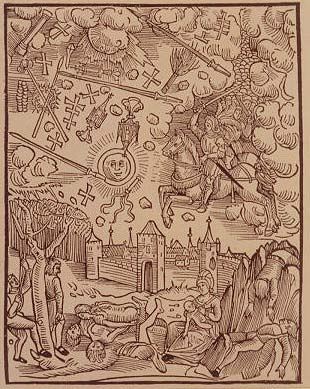

<!--#set var="year" value="1507" --><!--#include virtual="/header.html" -->
<ul>
  <li>
    <figure class="right side">
      <caption align="bottom" class="source">
        Grunbeck: <i>Eine neue Auzzlegung der seltzamen Wunderzachen</i>
      </caption>
      <td><b></b></td>
      </tr></table>Guerriers et armes emplissent les cieux, terrifiant la populace allemande avec leur menace de chose
      terribles à venir.
  </li>
</ul>
<!--#include virtual="/footer.html" -->
